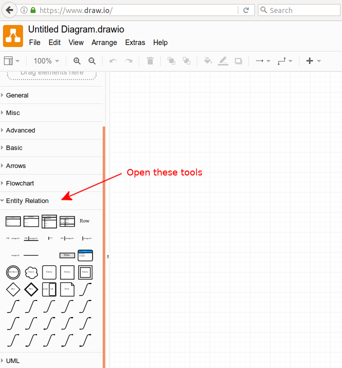
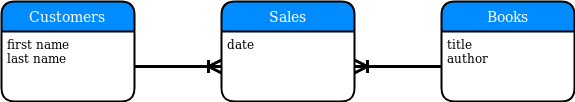

Objective 1.1 - Identifying the steps involved in a conceptual data model
In relational database design, going through the steps of creating a conceptual, logical and physical data modeling is very important for any database application that will be for more than personal use. Here is a good site that goes over the basic concepts that are involved. Keep in mind, that many of those concepts assume a relational database. So, if you are going to use a NoSQL database for the physical data model, you would have to adjust your thinking with respect to relationships between the entities. In fact, for a NoSQL database, you probably have to adjust your thinking about what an entity consists of.
This module assumes that we are designing for a relational database, not a database that will be implemented with a NoSQL database for the physical data model. When we cover NoSQL databases we will talk about possible modifications to the database model design.
Steps involved in creating a conceptual data model
Here are the basic steps involved in creating a conceptual data model:
- Work with the client to identify what the database is going to be used for. It is important to anticipate how your client wants to use the data. The client will probably not understand databases and needs to be made aware of what can and cannot be done.
- Once the general usage of the database is agreed upon, come up with the important entities that need to be used.
- Look at how the entities might be related. If there is a many-to-many relationship between two entities, a third entity that joins those entities will need to be included.
- For each of the entities, come up with the most important attributes that needs to be kept track of.
A conceptual data model should make sense to your client. The client should be able to describe how they intend to use the data. As the database designer, it is your job to go over whether or not the client's intended use is possible. In addition, as a database designer, you can point out additional uses of the data that the client might find useful. This information gathering stage will set out the requirements for the eventual database application. If there is miscommunication at this stage, it is unlikely the final product will be satisfactory. You would do well to learn the business language of your client so that it is easier to get true agreement on the requirements. At the same time, having some visual models or example applications to help the client see things from a database standpoint will be very useful.
For practical purposes, it is important to figure out the main usages the database application must support. If it is possible to plan for other low priority uses, that should be done. You and the client must agree at this stage on what the database application must eventually do.
As soon as it is practical to do so, you should build a prototype application to share with the client to make sure that the conceptual data model is being met.
Creating visual aids for the client
Having a diagram of how you envision the conceptual data model is important to you, but even more important to share with the client. Very useful tools for creating such diagrams can be found at https://www.draw.io/ . It is well worth your time to become familiar with these online tools to be able to create diagrams.
On the left sidebar, look for the Entity Relation tools and open these up:

Suppose your client owns a bookstore. She wants to keep track of which customer bought what book. You explain that one important entity is a customer and that another important entity is a book. Since the idea is to keep track of which customer bought what book, there is a relationship between those entities. Since one customer can buy several books, and a book may be purchased by several customers, the relationship between a books table and a customers table is a many-to-many relationship. That means you need a bridge entity to connect them. In this case, that entity would be a sale. So, you make this drawing to illustrate this to your client.

The symbol that looks like this:
is the symbol for one-to-many. In this case, it means that one customer can be responsible for many sales. The connection from "Books" to "Sales" is also a one-to-many relationship. That is, one book can be involved in many sales.
Note that a few attributes have been listed for each entity. This is not meant to be a complete set of fields. These few attributes are just to make sure your client has a good understanding of what each entity is. Adding all the fields and identifying the data type for each field is something that is done in the next stage, Logical Data Model creation.